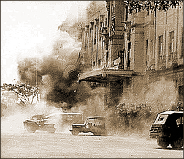
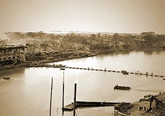

|
j
a v a s c r i p t |
| Pg.1 | Pg.2 Images |
Pg.1/4
February 8, 1945, Thursday
I slept through one of the biggest fires last night — the expected big one: INTRAMUROS. I woke up to find Ermita on fire ... slowly but surely and tragically burning away. The morning started quietly. I biked downtown and saw heaps of equipment — amphibian tanks in Aviles and heavy bridge-building equipment on Azcarraga. The jeeps and tanks were busy elsewhere — by España mostly. Passing by the Far Eastern University again, something smelled different. I caught a whiff before running into 40 Japanese bodies lying where they originally fell. On my way back I had forgotten all about them and almost ran over a legless torso with its guts spilling out. The shock almost threw me off my bike.

A Shell Lands on Santo Tomas
Saw Wendel at Santo Tomas and accepted a note for Monching Campos. He said that a few Japanese shells landed in the camp yesterday, causing 70-85 casualties and possibly 10-12 deaths. Margot Menzi told me 40 had died. She added that the 511 POWs rescued from Cabunatuan are in Manila. They had been tortured and were in bad shape, as I thought. From her I heard an amazing tale of an intercepted Tokyo message authorizing the Japanese in Manila to kill all internee males between the ages of 18 and 45. It was scheduled for the 17th, so the First Cavalry was tasked to get to Manila at full speed and liberate Santo Tomas at any cost. They must have surprised the Japanese by arriving in the early evening. Most of the young internees however are still in the Los Baños camp.

Pontoon Bridge
The Americans have, at last, reached South Manila. This morning, they crossed the Pasig near Malacañan using a pontoon bridge and watercraft. Four American divisions have also arrived on the southern outskirts to sandwich the Japanese in. It's just as well because the people in Intramuros, Ermita and Malate, as well as Pandacan, Paco, and possibly Santa Ana are suffering terribly, at least those who are still alive. . . . . |
|
|